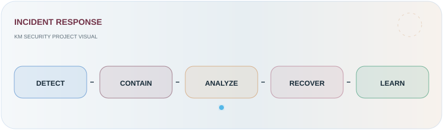
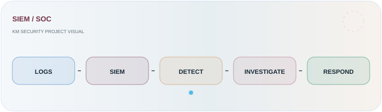
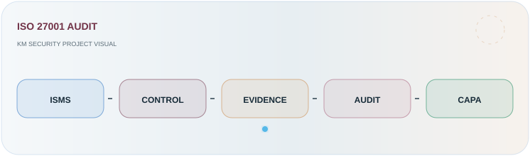
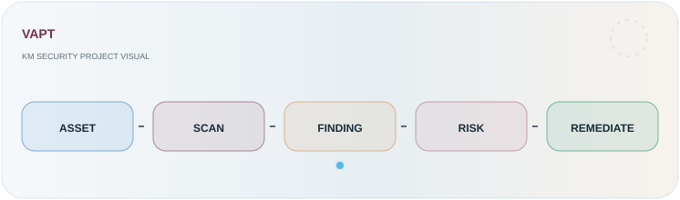

SOC STATUS: ONLINE
CYBERSECURITY • GRC • SECURITY OPERATIONS
Security that is governed, monitored and resilient.
Information Security & Cybersecurity professional specializing in Security Governance, GRC, Risk Management, VAPT, SIEM, Incident Management, Vulnerability Management and Regulatory Compliance.
SECURITY OPERATIONS
KM
01 ISMS / GRC ACTIVE
02 RISK & CONTROLS TRACKED
03 SIEM / SOC MONITORED
04 INCIDENT RESPONSE READY
05 AUDIT / COMPLIANCE ALIGNED
KM-GRC EXCEPTION HUNTER VISUAL SIMULATION
KM
CONTROL
VERIFIED
VERIFIED
LIVE PROFILE TELEMETRYVISUAL SIMULATION
GRC COVERAGE0%
SECURITY OPERATIONS0%
AUDIT READINESS0%
INCIDENT RESPONSE0%
01 / ABOUT
Security leadership with a governance-first mindset.
Experienced cybersecurity professional with a strong focus on Information Security & Cybersecurity professional specializing in Security Governance, GRC, Risk Management, VAPT, SIEM, Incident Management, Vulnerability Management and Regulatory Compliance.
Experienced in implementing and maintaining security controls aligned with ISO 27001, PCI DSS/CPP, NPCI, GSMA and global security standards, with a strong focus on enterprise risk reduction, audit readiness, cyber resilience and protection of critical information assets.
GovernanceISMS, policies, controls, SoA, audit readiness
RiskRisk registers, treatment plans, control effectiveness
OperationsSOC, SIEM, incident response and monitoring
LeadershipTeam, vendor, customer and auditor coordination
02 / EXPERIENCE
Security governance backed by real SOC operations.
Assistant Manager – Information Security
Led Information Security Governance, GRC & ISMS initiatives; managed security operations and infrastructure covering SIEM, firewalls, endpoint security, threat monitoring, log management, VAPT, risk assessments, incident and change management.
Directed security audits and security teams, vendors and stakeholders while driving audit readiness, risk treatment, finding remediation, incident response, business continuity and ISO 27001, PCI CPP/DSS, NPCI and GSMA compliance.
Assistant Manager - Information Security
Managed a 10+ member Security Operations team within a 24/7 SOC, covering BAU operations, customer engagement, onboarding, knowledge transfer, performance management and technical capability development.
Led SIEM implementation and operations including log onboarding, connector configuration, dashboard monitoring, investigations, detection-rule tuning, false-positive reduction and incident troubleshooting.
Team Leader - Information Security
Led a 6+ member Security Operations team in a 24/7 SOC and integrated Threat Intelligence Platforms with SIEM to enhance threat visibility, alert enrichment, monitoring and incident response efficiency.
Information Security Analyst
Monitored and investigated SIEM alerts and firewall traffic, performed Windows Server patch verification and security compliance checks, and developed Vulnerability Management Dashboards for security posture, trends, risk levels and remediation priorities.
Customer Support Engineer
Installed, configured and maintained IT systems and infrastructure; provided technical troubleshooting and managed system maintenance and remote administration using Kaseya across NIC Chennai Secretariat, Commercial Tax Office and Hitachi Payment Services.
03 / CAPABILITIES
Core security capability map.
GRC & Compliance
ISMS, ISO 27001, PCI DSS/CPP, security governance, policies, standards, procedures, audit readiness and regulatory alignment.
Risk Management
Risk assessment, asset inventory, risk registers, risk scoring, treatment planning and control effectiveness assessment.
SOC & SIEM
24/7 monitoring, SIEM reporting, alert triage, log onboarding, connector configuration, detection tuning and incident coordination.
VAPT & AppSec
Vulnerability management, remediation tracking, penetration testing, application security and security validation.
Incident Response
Playbooks, tabletop exercises, incident management, breach response coordination, business continuity and cyber resilience.
Leadership
Team leadership, vendors, third parties, customers, auditors and multi-site security support.
04 / SELECTED WORK PROJECT CONTROL DECK
Security projects built around risk, response and control assurance.
A focused view of practical security work across incident response, SIEM, GRC, ISO 27001, VAPT and security awareness — presented with clear outcomes, control points and remediation flow.

INCIDENT RESPONSE
Security Response Playbooks
Structured incident response workflows for faster triage, escalation, containment and recovery.
- Detect & Triage Standardized alert qualification and escalation.
- Contain & Recover Defined containment, recovery and stakeholder coordination.
- Improve Captured lessons learned for continuous response maturity.

SIEM / SOC
Security Monitoring & Reporting
SIEM reports and monitoring use cases covering authentication, IDS, RDP and firewall change activity.
- Log Visibility Structured security-event monitoring across critical sources.
- Detection Investigated suspicious activity and tuned monitoring use cases.
- Reporting Converted security telemetry into audit-ready reporting.

GRC / RISK
Risk & Control Assurance
Risk registers, control mapping, evidence coordination and compliance gap analysis.
- Risk Register Captured assets, threats, vulnerabilities, impact and ownership.
- Control Assurance Assessed control effectiveness and evidence readiness.
- Treatment Prioritized remediation according to business risk.

ISO 27001 / AUDIT
ISMS Audit & Compliance Readiness
Security governance activities supporting ISMS implementation, audit preparation, evidence coordination and finding remediation.
- ISMS Connected governance activities to ISO 27001 requirements.
- Evidence Organized control evidence and stakeholder inputs.
- CAPA Tracked findings, corrective actions and closure.

VAPT / REMEDIATION
Vulnerability Management
Vulnerability assessment governance, remediation tracking and security-risk prioritization.
- Assess Reviewed findings against asset and business context.
- Prioritize Focused remediation on material security risk.
- Close Followed remediation evidence through closure.
SECURITY AWARENESS
Security Culture Program
Security awareness communication and practical cyber hygiene initiatives for users and teams.
- Awareness Delivered focused security communication.
- Behaviour Reinforced practical cyber-hygiene practices.
05 / PROJECT
CISSP Practical Cybersecurity, Risk & GRC Project.
INDIVIDUAL PROJECT • FINTECH ENVIRONMENT
Information Security Risk Assessment & GRC Gap Analysis
Conducted Information Security Risk Assessments for a fintech environment, identifying threats, vulnerabilities, control weaknesses and business impact across critical assets.
Developed Risk Registers & Asset Inventories covering asset ownership, classification, threats, vulnerabilities, risk impact and security controls.
Performed Risk Scoring, Control Effectiveness Assessment & GRC Gap Analysis to identify security and compliance gaps and prioritize remediation.
Developed Risk Treatment Plans & Remediation Roadmaps aligned with business risk, control effectiveness and security priorities, strengthening GRC, Security Governance & Cyber Resilience.
06 / IMPACT
Measurable security improvement.
SECURITY CONTROL IMPROVEMENT
30% Reduction in Unauthorized Access Risk
Reduced unauthorized access risks by implementing enhanced Critical Device Security Rules and strengthening access control measures.
30% risk reduction
INCIDENT MANAGEMENT
20% Improvement in Incident Response Time & MTTR
Improved incident response time and MTTR through a streamlined Incident Management Procedure.
20% improvement
07 / CREDENTIALS
Security certifications & learning.
EC-COUNCIL
Certified Ethical Hacker
CEH
MICROSOFT
MCITP
Microsoft Certified IT Professional
PAYMENT SECURITY
Certified Payment Security Practitioner
CPSP
SECURITY OPERATIONS
Security Operations Centre Practitioner
CSOCP
WEB SECURITY
Web Application Security Professional
CWASP
AI SECURITY
Generative AI for Cybersecurity
Cybersecurity + AI
AI / ETHICAL HACKING
ChatGPT for Ethical Hacking
AI-assisted security
MASTERMIND
ISO 27001:2022 Lead Auditor
ISMS / Audit
INTELLIPAAT
Cybersecurity Master’s
Intellipaat • Advanced Cybersecurity Learning
INTELLIPAAT
CompTIA Cloud Essentials Training
Intellipaat • Cloud & Security Foundations
INTELLIPAAT
CISSP Training
Intellipaat • CISSP preparation
INTELLIPAAT
Certified Cloud Security Professional Training
Intellipaat • Cloud Security
08 / COMMUNITY
Visit ForumTurn the portfolio into a cybersecurity knowledge hub.
Discuss GRC, ISO 27001, PCI DSS, VAPT, SOC, SIEM, threat intelligence and AI for security.
09 / CAREER HUB
Recruiter-ready security leadership profile.
RECRUITER SIGNAL: READY
GRC-led. SOC-aware. Audit-ready.
Positioned for cybersecurity, GRC, compliance, information security and security leadership opportunities across GCC and international markets.
70% GRC / Compliance30% Technical Security24/7 SOC Leadership
RECRUITER NETWORK ACTIVE
PROFILE CHANNELS READY
RECRUITER CHANNEL
LinkedIn
Professional profile, cybersecurity experience, certifications and recruiter networking.
Open Profile ↗10 / CONTACT
Let's connect.
Let's Connect
Contact details are private. Click to reveal.
SECURE CHANNEL READY GRC • SOC • RISK